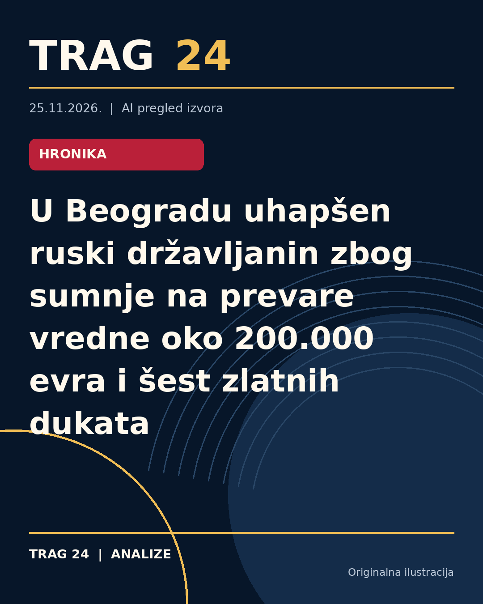

U Beogradu uhapšen ruski državljanin zbog sumnje na prevare vredne oko 200.000 evra i šest zlatnih dukata

ŠTA SE DOGODILO
Beogradska policija je uhapsila ruskog državljanina K. S. (60) pod sumnjom da je, u saizvršilaštvu sa još nepoznatim licima, izvršio više krivičnih dela prevara. Prema sumnjama, oštećene osobe su dovele u zabludu da su njihovi članovi porodice teško povređeni i da im je potrebna hitna medicinska pomoć, nakon čega su im prevaranti uzeli oko 200.000 evra i šest zlatnih dukata.
HRONOLOGIJA
Hapšenje je sprovedeno od strane Ministarstva unutrašnjih poslova u Beogradu, tačnije Uprave kriminalističke policije, u saradnji sa Prvim osnovnim javnim tužilaštvom u Beogradu. Osumnjičenom je određeno zadržavanje do 48 sati, nakon čega će biti priveden nadležnom tužilaštvu sa podnetom krivičnom prijavom.
ŠTA NAVODE IZVORI
Svi izvori slažu se u navodu da je uhapšeni ruski državljanin optužen za prevare i da je prevario više osoba za navedeni iznos novca i zlatnih dukata. Policija apeluje na građane da budu oprezni i da u slučaju sličnih poziva prvo provere informacije sa članovima porodice, a zatim prijave slučaj policiji pre preduzimanja bilo kakvih drugih koraka.
ŠTA JE POTVRĐENO
Potvrđeno je da je osumnjičeni uhapšen u Beogradu, da mu je određen 48-časovni pritvor, kao i da se vodi postupak protiv njega za više dela prevare. Iz policije i tužilaštva potvrđuju da je oštećenim osobama pričinjena šteta u iznosu od oko 200.000 evra i šest zlatnih dukata.
ŠTA NIJE POTVRĐENO
Do sada nema informacija o drugim učesnicima u ovoj, kako se navodi, organizovanoj prevari. Takođe, detalji o tačnom načinu na koji je prevara izvršena nisu dodatno precizirani osim navoda o lažnim informacijama o teškim povredama članova porodice.
ŠTA OSTАJE OTVORENO: Ostaje nejasno koliko je osoba ukupno oštećeno u ovom slučaju, kao i da li će policija uspeti da identifikuje i uhvati ostale osumnjičene. Takođe, dalji tok istrage i eventualni sudski proces će detaljnije rasvetliti okolnosti ovog događaja.
Izvori
- https://www.euronews.rs/srbija/drustvo/253697/osumnjicenom-odredeno-zadrzavanje-do-48-casova/vest
- https://mondo.rs/Info/Crna-hronika/a2316962/rus-prevario-ljude-u-beogradu-za-200000-evra.html
- https://013info.rs/srbija/uhapsen-ruski-drzavljanin-zbog-prevara-od-gradjana-uzeo-oko-200-000-evra-i-sest-zlatnih-dukata/
Ova analiza je pripremljena uz pomoć veštačke inteligencije na osnovu javno dostupnih izvora. Navodi izvora nisu nužno nezavisno potvrđeni.